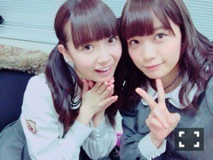
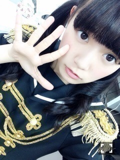

| 2015/05 19 Tue | ひめたん-OoO-その544 |

日曜日はらじらー！サンデー
聞いてくれたみなさん
ありがとう( ˆoˆ )
ゲストは声優アーツのコーナーに
every❤︎ing!
木戸衣吹さん、山崎エリイさん
10時台は乃木坂46から
深川麻衣ちゃんでした！
乃木坂回4回目ということで
ちょっとずつリラックスして
お話できるようになってきたよ～
「ひとりノリひめたん」は
もう何がなんだか(°ω°)
ドSなリスナーのみなさんからのフリと
ドSなスタッフさんセレクトのおかげで
ひめは終始タジタジでした(°ω°)
や～もうね、ほんとにね
コーナーが成立してたかどうかが
不安でならないです......(°ω°)へへ
まいまいのコーナーは完敗でした！
やはり聖母は聖母だった！
まいまいの人柄がそうさせたのかしら
スタジオにも穏やかな空気が
流れておりました(´｡･v･｡｀)
マリア、フラッシュ！！
ここだけの話なんですが
生放送終わってから
「あー緊張した～」って
ひめに抱きついてきたまいまいが
もんのすごく可愛かったです♡
まいまいにはリベンジしたいな～
今度は必殺技で対決も楽しそう
まいまい、また来てね！
次回もお楽しみにっ

メンバーでも
陽菜ちゃんとか真夏さんとか
聞いててくれたみたいで嬉しい❁
昨日の夜はNOGIBINGO!4
告知してなかったねーごめんねーー
乃木坂応援団の企画でした！
若月・西野・白石・秋元・中田・中元
チアガールになったよ(∗ ˊωˋ ∗)
何よりラッパーNOJOがもう
本当にすき。ふふふ。
SAY JO～！ぷちょへんざ！
観てくれた人は感想聞かせてね～
来週も出るよ！

乃木團ライブin台湾
密着ドキュメント完結編！
バスの中の様子や
乃木團の演奏をお届けしたりと
後編も大ボリュームですよ～～
自分たちの事なのに
最後ちょっと感動しちゃったもんね
ひめは意外と楽屋ではテンションが
そんなに高くない人間なんだなーてのも
伝わる映像かなーと(笑)
今回の台湾ライブを通して
勉強になることがたくさんあったし
今までとはまた違った
新しい景色を見ることができました！
乃木團でもっともっと多くの人に
歌を届けたいと思ったし
そのためにはまだまだ練習をして
力をつけないといけないなというのも
ステージに立ってみて感じました。
もう2度と
こんな経験できないかもしれない
一生忘れられない台湾ライブ。
私たちを受け入れてもらえるか
MCは言葉が通じるか、と
今までのライブとはまた違った不安を
抱えていた私たちですが
ひとつひとつ乗り越えていこうと
がむしゃらに取り組むごとに
日々チームがひとつになっていくのを
感じた2週間でした
たくさんの人に支えられて
私たちはあの大きなステージに
立ったんだということも
台湾で私たちを待っててくださった
ファンのみなさんの顔も
心に留めて、頑張りたいと思います
また絶対に帰るぞ！
今度はもっと大きくなって帰るぞ！
次、いつ乃木團として
オファーが来るかはわからないけれど
これからもがんばります☆
謝謝、台湾！

あすかりんはたまに
ひめのおくちであそぶんですよ～

 のぎ天でやりたい企画とかって
のぎ天でやりたい企画とかって
ありますか？
浴衣着たい！
浴衣着たい！
浴衣着たーーい！
ひめたんはホラー映画とか
好きですか？
あんまり得意ではないです( >_< )
大丈夫です、この夏、
メンバーが主演を務めるホラー映画が
2作公開されることは知ってます。
観ます、観ます。
テスト勉強をやってたとき、
夜遅くまでやってた！？
中間テストに向けての
応援メッセージお願い！
☺
どうしようもなく眠い時は寝てたよ
眠いのに頭に入れようとしても
受け付けてくれないからね(´・ω・｀)
中間テストの時期なんだね！
終わったあとのお楽しみとか考えながら
勉強するのがひめは好きだったよ～
応援してます☆
スラダンどこまで
よみましたかぁー？？
今13巻まで読みました！！！
ひめたんは野球とサッカーだったら
どっち好き？広島はどっちもあるよね！
もちろんどっちも応援しているよ！
最近、カープ女子がキテるというので
今本読んでお勉強してます( ˇωˇ )
とりあえず試合観戦行きたい～
ひめたんの日記の
コメント欄下２ケタに46を踏んだ方へ
手書きでコメ返するコーナー
＼ ひめたん46 ／

コメントありがとー♡
音楽の話を前回ちらっとしたら
たくさん反応があってびっくり！
音楽聴くことが好きで
歌うことが好きだった私が
今こうしてアイドルとして
みなさんに歌を届けるお仕事を
してるのがなんだか不思議な気分。
私にとって特別な曲があるように
乃木坂の楽曲がいつか
みなさんにとって特別な曲になれたら
ステキだなって読んでて思いました♡
パソコン壊れた(((;°Д°;))))
(＊´・ω・＊)
コメント(1050)
2015/05/19 23:30